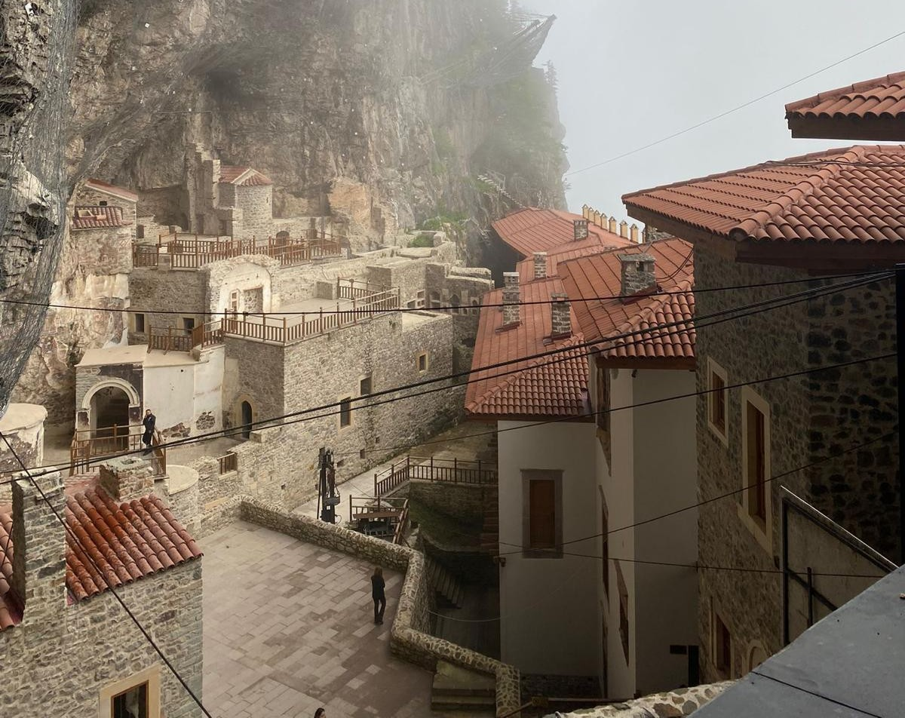
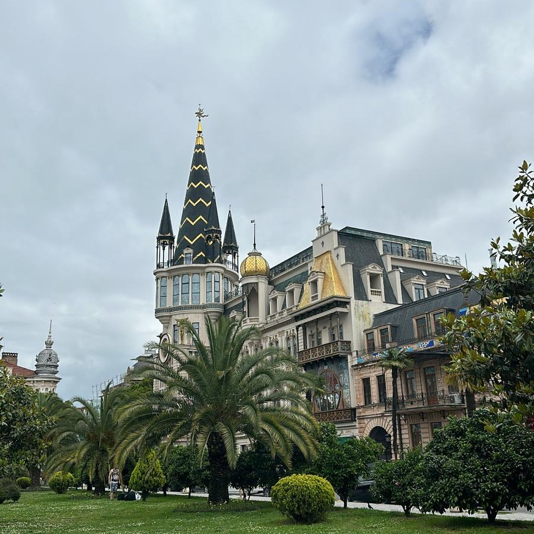

🤍

Nasıl İnşa Edildi? Sümela Manastırı
Olduğu Konumu Görünce Nasıl Yapıldı Diye Düşüneceğiniz, Yılların Mirası Sümela Manastırı
🤍

Dünyanın En Romantik Şehiri..
Doğal Güzellikleriyle Sizleri Kendine Hayran Eden Dünyanın Belki de En Romantik Şehri Kapadokya
🤍

Şerefiye Sarnıcı
İstanbulda Kullanılan Yenilikçi Teknolojileriyle Sizleri Büyüleyecek Olan Sarnıç...
🤍

GÜRCİSTAN-BATUM
İstanbulda Kullanılan Yenilikçi Teknolojileriyle Sizleri Büyüleyecek Olan Sarnıç...